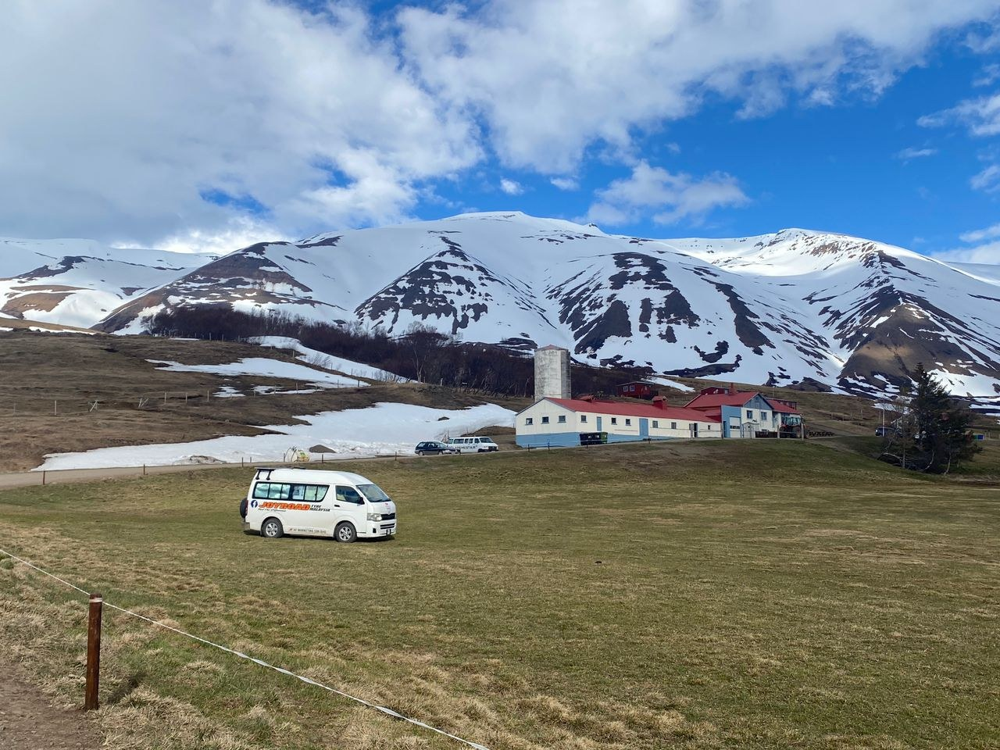
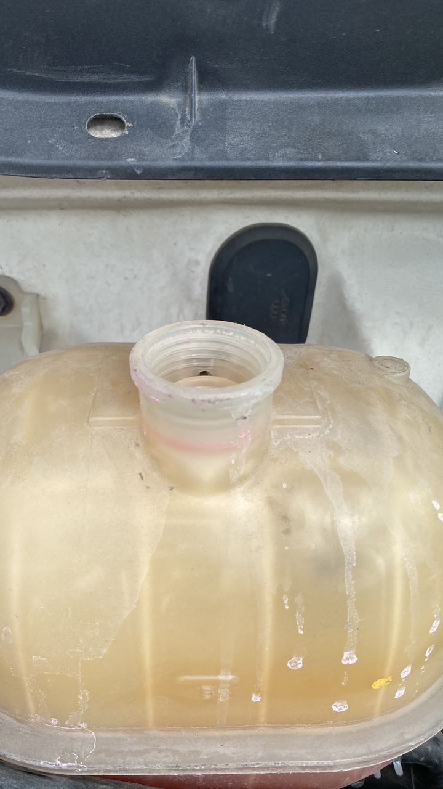
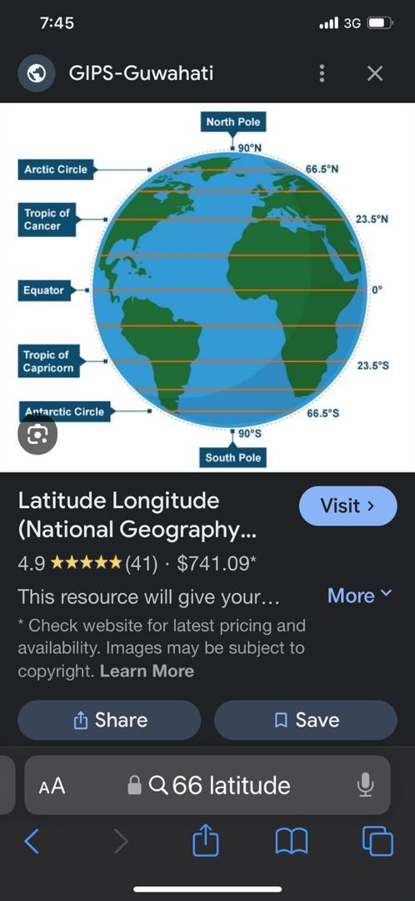
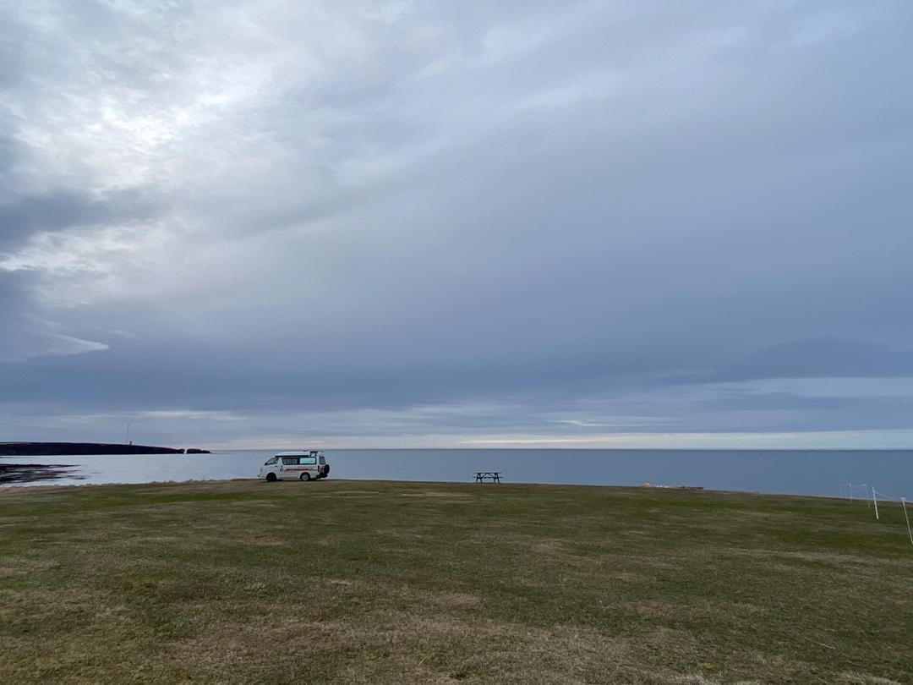

Real Story · 中文
8/5 overnight at Grenivík Polar Hestar horse riding farm.
8 May 2024，我 overnight at Grenivík Polar Hestar horse riding farm。 因为我 book 了 9 May morning 的 Iceland horse riding session。
Toyotaki 停在北 Iceland 的山和空地之间。 这个地方不像城市，也不像普通 campsite。 它更像一个准备让人进入 Iceland horse world 的安静前一晚。

Toyotaki Issue
我发现 coolant 的盖子不见了！
然后我发现 coolant 的盖子不见了！ 因为我常常加 coolant， 可能之前锁不紧， 跑跑下，自己蹦出来了。
这种就是 overland 的真实部分。 不是每天只有山、雪、马和海， 也有车的问题要处理。 Toyotaki 是旅程的身体， 所以它的小问题也会马上变成路线安排。
所以明天，也就是 10 May， 我需要去 Akureyri 找 spare part 店看一下。 也因为这样，9 May 我又 overnight at the same Sundlaug Eyjafjarðarsveitar / Sundlaugin Hrafnagili in Akureyri。

Northern Edge
Near the Arctic Circle.
66.5°N 已经是 Arctic Circle。 北纬 66 度线，是地球赤道面以北 66 度的一个纬度圈， 大约在 Arctic Circle 南边几十公里的位置。
而我们那时在大约 66.12°N。 Technically，还没有真正越过 66.5°N 的 Arctic Circle， 但已经非常接近。 对我和 Toyotaki 来说， 那种感觉已经像到达了北极圈门口。
从 Malaysia 一路开到这里， 看到地图上的纬度数字， 心里会有一种很难解释的感觉： 不是一个景点，而是地球坐标本身在告诉你， 你真的走到很北很北的地方了。


English Memory Summary
Horse farm, coolant trouble, and the edge of the Arctic feeling.
On 8 May 2024, Tuzi overnighted at Grenivík Polar Hestar horse riding farm because she had booked an Iceland horse riding session for the next morning.
Around the same period, she discovered that Toyotaki’s coolant cap was missing, likely because frequent coolant refilling had left it not tightly secured. This changed the next day’s plan: she would return to Akureyri to look for spare parts, and on 9 May she stayed again at Sundlaug Eyjafjarðarsveitar / Sundlaugin Hrafnagili.
The latitude also became memorable. The Arctic Circle is around 66.5°N, while Tuzi and Toyotaki were around 66.12°N — still technically south of the Arctic Circle, but close enough to feel like reaching its doorstep.
Heart Statement
有些远方不是用国名计算，是用纬度感觉出来的。
At 66.12°N, Toyotaki had not technically crossed the Arctic Circle, but it had reached the edge of that feeling: a Malaysian campervan standing near the far north of the map.